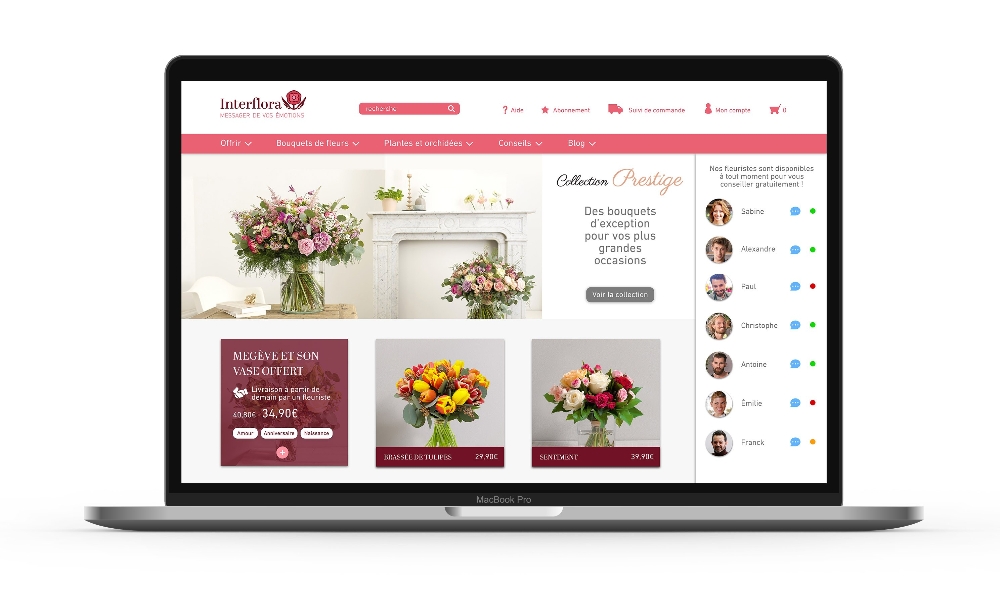
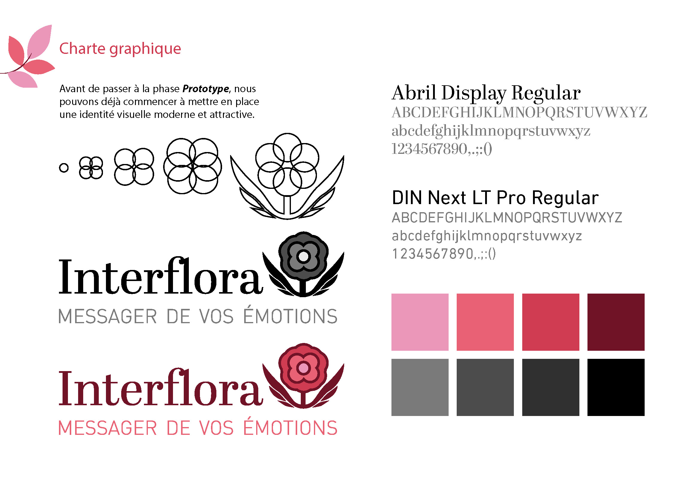
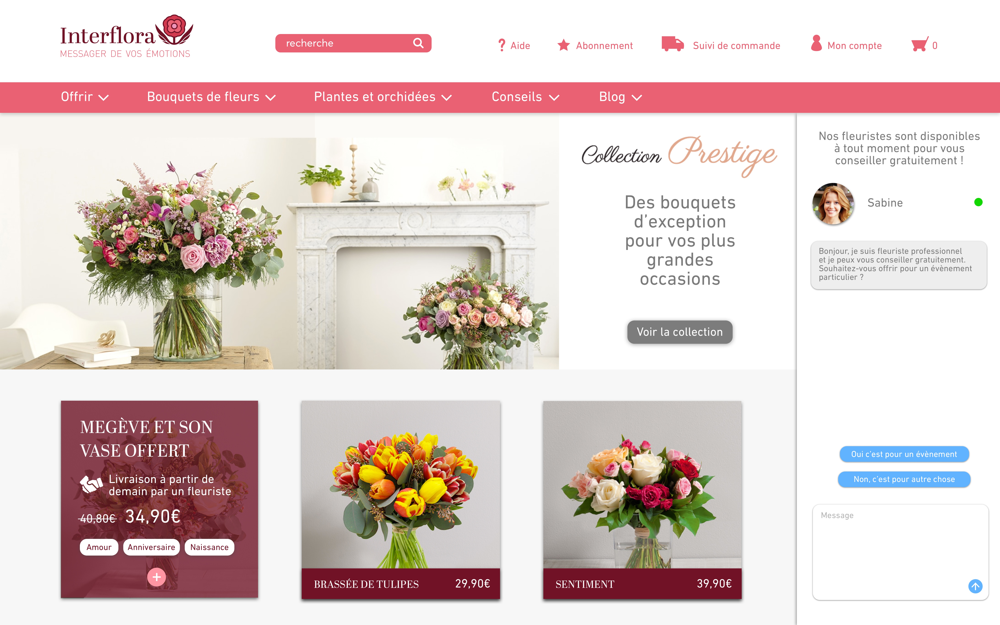

Introduction
Interflora souhaite déployer une stratégie digitale pour un nouveau positionnement au sein de la vente en ligne. Le but était d’imaginer une interface et des scénarios personnalisés multi-écrans qui repoussent les limites de l’expérience client. Il fallait engager l’utilisateur sur les services, avec un nouveau dispositif.

Charte Graphique
Avant toutes choses : j’ai décidé de recréer la charte graphique d’Interflora et de la rajeunir afin d’amener plus d’utilisateurs sur leur produit. Les mots clefs à la création de ce logo était : rapidité, livraison, fleurs; dans l’idée de reprendre l’esprit de l’ancien logo.
Le plus
Mais la nouvelle valeur ajoutée de ce produit est la mise en place d’un chatbox avec des fleuristes professionnel disponible pour toutes informations, choix, aide sur le site et sur les produits d’Interflora. Avec également le choix à l’utilisateur d’utiliser soit des réponses rapides pré-établies, soit écrire directement le problème.
